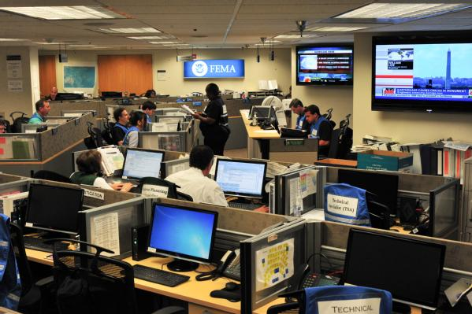
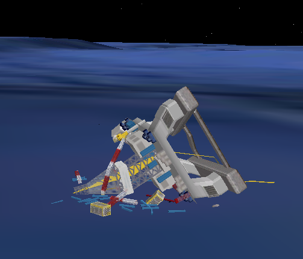
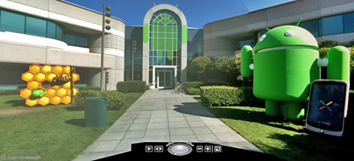

08.31.2011 11:54
FEMA's National Response Coordination Center
A recent FEMA blog post gives an
inside view of their National Response Coordination Center:
Irene Update 30: Engaging the Private Sector
Irene Update 30: Engaging the Private Sector

08.30.2011 09:19
Teaching today
I am teaching research tools starting
today at 11:10 in Chase Ocean Engineering Rm 142 (the computer
classroom, next to the video classroom). Auditors (official or
unofficial) are welcome to sit in. Priority to the room's computers
will go to the enrolled students and the GEBCO students. I am
working on getting more computers or you can bring your own laptop
if you have one. If your laptop is running Mac OSX, it is up to you
to buy VMWare Fusion. I will not provide it.
08.29.2011 07:16
Hurricane Irene in NH
This was the view at Jackson Lab
yesterday. Recorded as 1 frame every 2 minutes. Plays 6 frames per
sec. The storm does not look very impressive here in NH.
I only remembered to make this video after seeing Alex post a time lapse showing Central Park:
NOAA IRENE Response Imagery for North Carolina.
I only remembered to make this video after seeing Alex post a time lapse showing Central Park:
NOAA IRENE Response Imagery for North Carolina.
08.23.2011 14:34
ESRI tying data.gov to geodata.gov
I am a lot behind the times... I
think I missed allis while working on Deepwater Horizon. From the
2010 files as I try to catch up on life.
White House to tie together mapping and data sites
White House to tie together mapping and data sites
California-based ESRI began last summer tying Data.gov to Geodata.gov, the geospatial information gateway, said company President Jack Dangermond in an interview with Nextgov. ... The tool is an example of what President Obama would like to see agencies pursue under his open government initiative. A day after taking office, he issued a memo that called on federal managers to use new technologies to foster transparency, collaboration with industry and governments, and public participation. With ArcGIS.com, state and federal agencies allow ESRI to tap geographic information stored in government databases, encouraging collaboration. The site invites the public to participate in the process by allowing people to save in a gallery any map they create so others can view it, by generating links to their maps, and by adding data, or metadata, to data sets based on personal knowledge they may have about a subject. The mashups also provide transparency.Not everyone is happy with this arrangement: Why ESRI's GeoData.gov - Data.gov Contract Gets the Community Upset by Sean Gorman.
08.09.2011 11:37
John Konrad at Google and Deepwater Horizon
It was great to finally meet John
Konrad, founder of gCaptain when
he visited Google MTV (Mountain View, CA). John and I have "talked"
online quite a bit over the last few years via email. I was never
quite sure what part of the world John was in when he was emailing
me. John and the gCaptain community have been a great sounding
board for me. It was even better to be able to talk to him for
several hours in the Google Cafe in the building where I
worked.
I've been waiting for John to do a post on the Deepwater Horizon model that is in Google Earth.
Google Releases 3D Model Of Deepwater Horizon [gCaptain]
Google's 3D Warehouse page for the model, which says:
I am now back from my month of time at Google. My brain is full up with all sorts of new ideas and things I'd like to share about using the Google infastructure from the outside. I will be slowly working through the ideas as I get them formulated, coded, and written. A few of the ideas will have to wait until Google is able to release some new features. They seem to have an endless supply of new things they are innovating. And I still have to catch up on a number of Google I/O talks that are in my "to watch" list.
I've been waiting for John to do a post on the Deepwater Horizon model that is in Google Earth.
Google Releases 3D Model Of Deepwater Horizon [gCaptain]
Google's 3D Warehouse page for the model, which says:
This is the speculated remains of the DeepWater Horizon oil rigKMZ to the location

I am now back from my month of time at Google. My brain is full up with all sorts of new ideas and things I'd like to share about using the Google infastructure from the outside. I will be slowly working through the ideas as I get them formulated, coded, and written. A few of the ideas will have to wait until Google is able to release some new features. They seem to have an endless supply of new things they are innovating. And I still have to catch up on a number of Google I/O talks that are in my "to watch" list.

08.06.2011 21:19
Influencing the next generation
For me, it was Bill Borucki who took
me in and had me programming telescope calibration and control code
when I was a senior in high school. Thanks to JJ for the link. I
don't have my own TV show and I haven't had a wikipedia page
created about me, but I still try to make an impact no matter how
small.
Neil deGrasse Tyson
Neil deGrasse Tyson
08.05.2011 10:39
BOATraNET
I don't know about being the first. I
know many UNOLS ships do this, but still interesting. Found via
Panbo.
08.03.2011 08:54
Ocean videos
Today, I have three days left in my
month long visit to Google where I've been on the Oceans team. It's
been a very intense experience and I meet more awesome people than
I can even remember. I've talked to people on these teams: Scholar,
Fusion Tables, Earth, Develop Relations, Finance, Crisis, Maps,
StreetView, System Security and I forget what else! I tried to keep
up with the notes, but I definitley could got behind on the
torrent. The MTV campus is really, really big. I made good use of
the GBikes (bright yellow semi-cruiser bikes that get people
everywhere). I also got to meet lots of people who are not
Googlers, but closely associated to various projects.
As for the Google infastructure... all I can say is that it is amazing and getting better every day. I've seen tools that some non-Google folks have said are two wimpy to be useful used to tackle absolutely massive tasks. Great technology combined with boat loads of smart people. I wish I could talk more about it, but that is defitely off limits.
I've definitely been a Noogler and appreciated the internal resources and coaching for people who are new to Google. And I especially appreciate the hospitality of people that I dropped in on without invitation and those who responded to my unsoliceted emails.
I finally met Frank Warmerdam (creator of gdal et al.) and we hit a talk in San Francisco on Geocouch, where I got to mingle with a very exciting (and excited) bunch of people from all over the "geo" world... a space where everyone is fired up about open source tools and geospatial data/processing. I was hoping to meet other big python people around Google (hi Guido), but with the crush of new and crazy stuff, I didn't pull it off.
To go with my month of Google Oceans, here are some videos from YouTube:
First is the University of Delaware CShell lab led by Art Trembanis with what feels like a super high speed ride on a scallop dredge.
The next is a video from the Okeanos Explorer's ROV dives in the Galapagos that was just posted.
And finally a cruise overview in Google Earth with narration by Jenifer of the 2010 Okeanos Explorer cruise to Indonesia.
As for the Google infastructure... all I can say is that it is amazing and getting better every day. I've seen tools that some non-Google folks have said are two wimpy to be useful used to tackle absolutely massive tasks. Great technology combined with boat loads of smart people. I wish I could talk more about it, but that is defitely off limits.
I've definitely been a Noogler and appreciated the internal resources and coaching for people who are new to Google. And I especially appreciate the hospitality of people that I dropped in on without invitation and those who responded to my unsoliceted emails.
I finally met Frank Warmerdam (creator of gdal et al.) and we hit a talk in San Francisco on Geocouch, where I got to mingle with a very exciting (and excited) bunch of people from all over the "geo" world... a space where everyone is fired up about open source tools and geospatial data/processing. I was hoping to meet other big python people around Google (hi Guido), but with the crush of new and crazy stuff, I didn't pull it off.
To go with my month of Google Oceans, here are some videos from YouTube:
First is the University of Delaware CShell lab led by Art Trembanis with what feels like a super high speed ride on a scallop dredge.
The next is a video from the Okeanos Explorer's ROV dives in the Galapagos that was just posted.
And finally a cruise overview in Google Earth with narration by Jenifer of the 2010 Okeanos Explorer cruise to Indonesia.
08.02.2011 15:23
Mark Micire - robotics et al
This morning I finally got a chance
to meet up with Mark
Micire. Mark and I have many similar research interests. Check
out his awesome multi-touch demo of driving a robot!